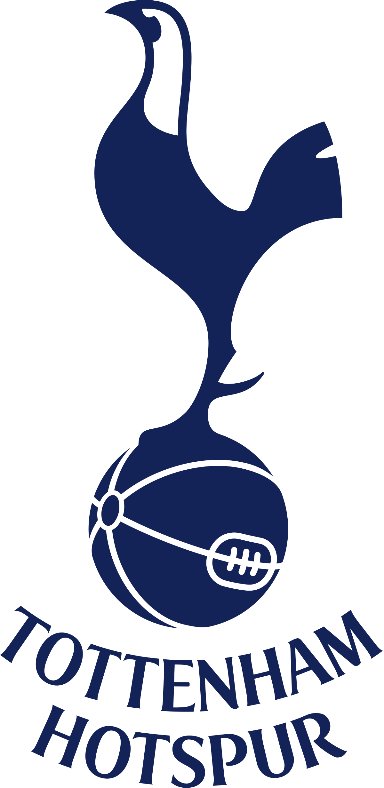

THE BIG 6 of premier League soccer
The Premier League is one of the most competitive divisions in elite level football, with some of the biggest and richest teams in the world.
Unlike some of its counterparts across Europe, where one or two clubs are dominant, the Premier League features what has become popularly known as 'The Big Six'.
Manchester United, Liverpool, Arsenal, Chelsea, Manchester City and Tottenham are considered the 'big six' in the Premier League.
The Premier League is one of the most competitive divisions in elite level football, with some of the biggest and richest teams in the world.
Unlike some of its counterparts across Europe, where one or two clubs are dominant, the Premier League features what has become popularly known as 'The Big Six'.
Manchester United, Liverpool, Arsenal, Chelsea, Manchester City and Tottenham are considered the 'big six' in the Premier League.
 Manchester United FC
Manchester United FC
Manchester United Football Club, commonly referred to as Man United. The club was founded in 1878, and they play all of there home game at Olf Trafford Stadium.
 Manchester City FC
Manchester City FC
Manchester City Football Club was founded in 1880 as St. Mark's. Then became Manchester City in 1894. And they play all there home game at the Etihad Stadium in east Manchester since 2003
 Chelsea FC
Chelsea FC
Chelsea Football Club, commonly referred to as Blues, is based in Fulham, West London.
Founded in 1905. They play their home games at Stamford Bridge.
Arsenal FC
The Arsenal Football Club, commonly referred to as Arsenal, is based in Islington, London. Arsenal was the first club from the South of England to join the Football League in 1893.
The Arsenal Football Club, commonly referred to as Arsenal, is based in Islington, London. Arsenal was the first club from the South of England to join the Football League in 1893.

Tottenham Hotspur
Tottenham Hotspur Football Club, commonly referred to as Spurs, is a football club based in London. Founded in 1882, Tottenham's emblem is a cockerel standing upon a football.
Tottenham Hotspur Football Club, commonly referred to as Spurs, is a football club based in London. Founded in 1882, Tottenham's emblem is a cockerel standing upon a football.
 Liverpool FC
Liverpool FC
Liverpool Football Club is a professional football club based in Liverpool.
Founded in 1892, the club has played its home games at Anfield since its formation.